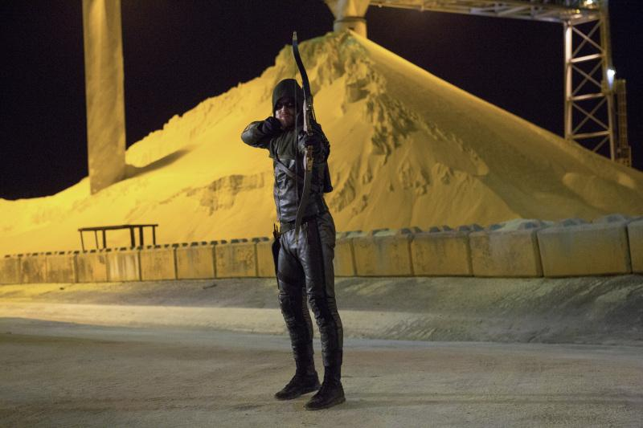

Arrow
95% de coincidencia
2012
16+
7 temporadas


Basada en las historietas de Flecha Verde, un próspero playboy se transforma en un superhéroe que salva a la ciudad de villanos, armado únicamente con un arco y flechas.
Temporada 1

2. Honra a tu padre
Oliver pone su mira en derrotar a un criminal relacionado con la tríada china: Martin Somers, a quien Laurel está demandando.